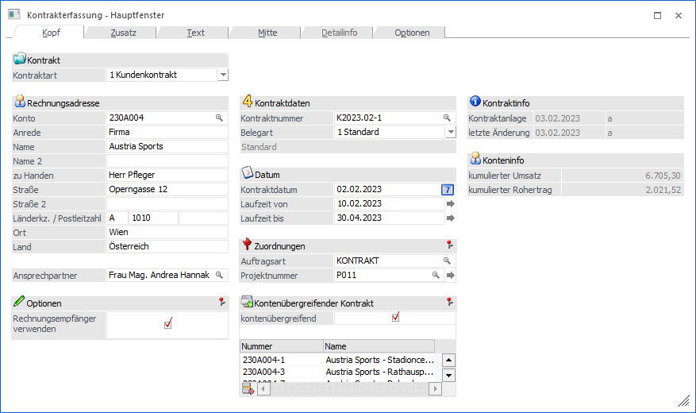

Unter einem Kontrakt ist die Vereinbarung zwischen einem Kunden und seinem Lieferanten zu verstehen, in einem bestimmten Zeitraum eine definierte Menge von Artikeln abzunehmen. Alternativ kann auch eine Vereinbarung über einen bestimmten Wert getroffen werden. Daraus werden in der Regel besondere Preise oder Konditionen resultieren, die ebenfalls im Kontrakt festgehalten werden. Zuletzt ist es die Aufgabe des Programm-Moduls, die Kontrakterfüllung anzuzeigen.
Vom Standpunkt des WinLine Anwenders aus, können Kontrakte mit Kunden (Verkaufskontrakte) und / oder mit Lieferanten (Einkaufskontrakte) abgeschlossen werden, wobei sich der Kontrakt auf einen oder mehrere Artikel beziehen kann.
Das Modul "Kontraktverwaltung" erlaubt:
ü Die Anlage von Kontrakten
ü Die Pflege von Preisen, Fristen und Abnahmemengen für die bestehenden Kontrakte
ü Das Verlängern, manuell Abschließen und Löschen von Kontrakten
ü Die Überprüfung der Erfüllung von Kontrakten
Die Erfassung der Kontrakte erfolgt im Menüpunkt…
1 WinLine FAKT
1 Erfassen
1 Kontraktverwaltung
1 Kontrakte erfassen
… wobei diese sehr ähnlich der Belegerfassen gestaltet ist.

Die Kontrakterfassung ist in mehrere Register unterteilt, welche in den nachfolgenden Kapiteln detailliert beschrieben werden:
ü Register "Kopf"
Über das Register
"Kopf" können neue Kontrakte erstellt oder bestehende editiert werden.
ü Register "Zusatz"
In dem Register
"Zusatz" können weitere Informationen zu dem Kontrakt erfasst bzw. editiert
werden.
ü Register "Text"
In dem Register
"Text" kann ein Kontrakt mit zusätzlichem Informationstext versehen werden.
ü Register "Mitte"
In dem Register
"Mitte" können die Kontraktzeilen des Kontrakts erfasst bzw. editiert
werden.
ü Register "Detailinfo"
In dem
Register "Detailinfo" werden weitere Informationen - bezogen auf die aktuelle
Kontraktzeile - angezeigt.
ü Register "Optionen"
In dem Register
"Optionen" kann u.a. eingestellt werden, welche Informationen während der
Kontrakterfassung zusätzlich zur Verfügung stehen sollen.
ü Bereich "Speichern"
Nach Abschluss
der Erfassungsarbeiten kann die Bearbeitung des Kontrakts in diesem Bereich
abgeschlossen werden.
Zusätzlich werden in dem Kapitel Exkurs - Kontrakterfassung weitere Sonderfunktionen beschrieben.
Buttons
Die folgenden Buttons stehen in allen Registern zur Verfügung. Eventuell zur Verfügung stehende Sonderbuttons werden in den jeweiligen Kapiteln der Register beschrieben.
Ø Kontrakt speichern
Durch Drücken des Buttons "Kontrakt speichern" bzw. der Taste F5 wird in den Bereich Speichern gewechselt, in welchem man durch nochmaliges Drücken des "Kontrakt speichern"-Buttons das Speichern oder Drucken des Kontrakts starten kann.
Ø Ende
Mit dem Button "Ende" bzw. der Taste ESC wird das Fenster geschlossen und alle getätigten Eingaben verworfen.
Ø Kontraktvorschau anzeigen
Durch Anklicken des Buttons "Kontraktvorschau anzeigen" kann der Kontrakt in einer Vorschau angezeigt werden.
Hinweis
Der Name des hierfür genutzten Formulars setzt sich aus P02WxxyyPV zusammen. Für "xx" wird die Kontraktart eingesetzt (Kunden = 45; Kundengruppen = 46; Lieferant = 55; Lieferantengruppen = 56) und für das "yy" das gewählte Listbild (Register Zusatz). Wird im Listbild bei einem Lieferantenkontrakt z.B. ein "S" eingetragen, so würde auf das Formular "P02W55SPV" zugegriffen werden.
Ø Power Report
Durch Drücken des Buttons "Power Report" werden die erfassten Kontraktzeilen (nur Zeilen des Typs "1 - Artikel" und "6 - Gutschrift") auf Basis von Cube-Daten grafisch dargestellt. Die Ausgabe ist individuell anpassbar und erfolgt in der Form von "Widgets", die unterschiedlichste Darstellungen ermöglichen.
Ø Cube Ausgabe
Durch Anwahl des Buttons "Cube Ausgabe" werden die erfassten Kontraktzeilen in Form einer Cube-Ansicht angezeigt. Hierbei werden nur Zeilen des Typs "1 - Artikel" und "6 - Gutschrift" berücksichtigt.
Ø Excel Pivot
Durch Anwahl des Buttons "Excel Pivot" werden die erfassten Kontraktzeilen in Form einer Pivot Ausgabe in Microsoft Excel (2007 oder höher) angezeigt. Hierbei werden nur Zeilen des Typs "1 - Artikel" und "6 - Gutschrift" berücksichtigt.
Ø Ausgabe XLSX
Durch Anwahl des Buttons "XLSX Ausgabe" werden die erfassten Kontraktzeilen in Form einer XLSX-Datei ausgegeben. Hierbei werden nur Zeilen des Typs "1 - Artikel" und "6 - Gutschrift" berücksichtigt.
Ø Kontenstatistik
Durch Anklicken des Buttons "Kontenstatistik" erhält man eine Übersicht über die Verkaufszahlen.
Hinweis
Über das geöffnete Fenster "Statistik Überblick" kann die Auswertung geändert werden (z.B. zur Darstellung einer komprimierten Übersicht).